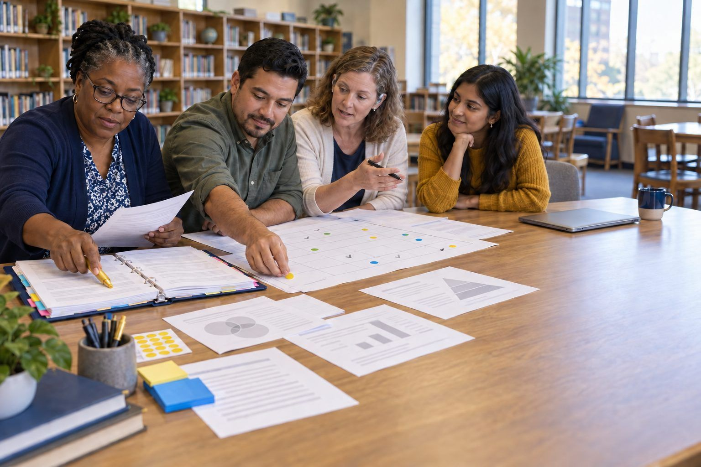

Standards alignment
Every activity is built on the TCEA ELEs first. This page shows how the same activities also connect to the Texas Essential Knowledge and Skills (TEKS), the English Language Proficiency Standards (ELPS), CAST's Universal Design for Learning (UDL) Guidelines 3.0, and the skills the Texas Student Success Tool (SST) will measure.
Standards are paraphrased and cited by section number, never quoted. Alignments are a good-faith planning aid, not an official correlation. Confirm current requirements at tea.texas.gov before adoption.

Texas Student Success Tool (SST)
Under House Bill 8, the Student Success Tool replaces STAAR beginning in the 2027–28 school year. STAAR stays in place for 2026–27. Grades 3–8 will take beginning-of-year, middle-of-year, and end-of-year assessments; the Algebra I, Biology, English I, and U.S. History end-of-course exams keep an end-of-year test, with optional beginning- and middle-of-year checkpoints.
None of these activities is test prep, and none should become it. They build what the SST blueprints reward over time: reading closely and citing evidence, writing and revising a constructed response, analyzing sources and competing claims, and explaining a conclusion from data. TEA's own caution applies here too: every student expectation must still be taught in full, not just the ones a blueprint lists.
Use the three checkpoints as one teaching loop: set a baseline at the beginning of the year, regroup and reteach at the middle, and review growth at the end. The activities marked below give students regular, low-stakes practice with the reasoning those checkpoints look for.
- RLA reading: comprehension and analysis of texts, with evidence7 activities
- RLA writing: composing, revising, and editing, including the extended constructed response8 activities
- Social studies: sources, claims, and the economics, science, technology, and society strand11 activities
- Science: interpreting models and data to build explanations from evidence0 activities
- Mathematics: data analysis and making reasoning visible2 activities
TEA: House Bill 8 student assessment SST Activities in the Learning Activities Hub
Texas Essential Knowledge and Skills (TEKS)
The Technology Applications TEKS (adopted 2022, required in grades K–8) include a digital citizenship strand with three substrands: social interactions (c)(8), ethics and laws (c)(9), and privacy, safety, and security (c)(10). They appear in §126.5–§126.10 for kindergarten through grade 5 and §126.17–§126.19 for grades 6–8. Gen AI activities also connect to the computational thinking, creativity and innovation, data literacy, and practical technology concepts strands.
Media literacy lives just as much in the English Language Arts and Reading TEKS: comprehension, response skills, multiple genres (including multimodal and digital texts), author's purpose and craft, composition, and inquiry and research. These are §110.2–§110.7 for K–5, §110.22–§110.24 for grades 6–8, and §110.36–§110.39 for English I–IV. Some activities also build the social studies skills strand and the science and engineering practices.
For professional learning activities, the TEKS listed are the student standards the educator is preparing to teach. Leadership and coaching sessions that don't lead straight to a student lesson list none, and neither do activities only for higher education.
- Technology Applications, digital citizenship: social interactions (c)(8)5 activities
- Technology Applications, digital citizenship: ethics and laws (c)(9)28 activities
- Technology Applications, digital citizenship: privacy, safety, and security (c)(10)18 activities
- Technology Applications: computational thinking16 activities
- Technology Applications: creativity and innovation6 activities
- Technology Applications: data literacy, management, and representation6 activities
- Technology Applications: practical technology concepts8 activities
- ELAR: comprehension skills3 activities
- ELAR: response skills7 activities
- ELAR: multiple genres, including multimodal and digital texts4 activities
- ELAR: author's purpose and craft3 activities
- ELAR: composition9 activities
- ELAR: inquiry and research11 activities
- Social studies skills (sources, frames of reference, bias, and evidence)10 activities
- Science: scientific and engineering practices4 activities
English Language Proficiency Standards (ELPS)
The ELPS (19 TAC §74.4) apply in every content area. Their cross-curricular student expectations cover learning strategies, listening, speaking, reading, and writing, and instruction must be communicated, sequenced, and scaffolded to each student's English proficiency level: beginning, intermediate, advanced, or advanced high.
- (c)(1)Learning strategies7 activities
- (c)(2)Listening56 activities
- (c)(3)Speaking78 activities
- (c)(4)Reading66 activities
- (c)(5)Writing72 activities
These activities give emergent bilingual students a lot to hold on to: cards that break ideas into small pieces, sorting that lets students show understanding before they can explain it, roles in discussion, and paper handouts with numbered paragraphs and drawing boxes. The whole site, including every handout, is also being translated into Spanish and Vietnamese, so students and families can work in their home language beside English.
Supports that work across the bank
- Cards and sorts: read each card aloud once, point out cognates, and accept pointing or placing a card as a first answer before asking for a sentence.
- Readings and mock posts: preview three to five key words with a picture or gesture, and use the paragraph numbers so students can cite evidence by number.
- Discussion: give sentence stems ("I think this is ___ because ___"), assign roles, and let partners rehearse in any language before sharing in English.
- Worksheets: allow drawing boxes, labeled sketches, and short phrases at beginning and intermediate levels; expect full sentences at advanced and advanced high.
- Home language: hand out the Spanish or Vietnamese version of a packet alongside the English one.
Universal Design for Learning (UDL 3.0)
CAST's UDL Guidelines 3.0 organize design around three principles: multiple means of engagement (the why of learning), representation (the what), and action and expression (the how). The goal is learner agency.
Several choices in this bank are UDL moves by design: every activity has an unplugged path and a digital path, handouts come in several formats, each activity lists adaptations for other grade bands and learners, and evidence of learning is named up front so goals are clear. The checkpoints below show where each activity goes further.
Engagement
- 7.1Optimize choice and autonomy9 activities
- 7.2Optimize relevance, value, and authenticity14 activities
- 7.3Nurture joy and play12 activities
- 7.4Address biases, threats, and distractions4 activities
- 8.1Clarify the meaning and purpose of goals11 activities
- 8.2Optimize challenge and support2 activities
- 8.3Foster collaboration, interdependence, and collective learning60 activities
- 8.4Foster belonging and community6 activities
- 8.5Offer action-oriented feedback14 activities
- 9.1Recognize expectations, beliefs, and motivations1 activities
- 9.2Develop awareness of self and others7 activities
- 9.3Promote individual and collective reflection33 activities
- 9.4Cultivate empathy and restorative practices5 activities
Representation
- 1.1Support opportunities to customize the display of information0 activities
- 1.2Support multiple ways to perceive information1 activities
- 1.3Represent a diversity of perspectives and identities in authentic ways9 activities
- 2.1Clarify vocabulary, symbols, and language structures5 activities
- 2.2Support decoding of text, mathematical notation, and symbols0 activities
- 2.3Cultivate understanding and respect across languages and dialects3 activities
- 2.4Address biases in the use of language and symbols3 activities
- 2.5Illustrate through multiple media1 activities
- 3.1Connect prior knowledge to new learning0 activities
- 3.2Highlight and explore patterns, critical features, big ideas, and relationships18 activities
- 3.3Cultivate multiple ways of knowing and making meaning1 activities
- 3.4Maximize transfer and generalization33 activities
Action and expression
- 4.1Vary and honor the methods for response, navigation, and movement15 activities
- 4.2Optimize access to accessible materials and assistive and accessible technologies and tools6 activities
- 5.1Use multiple media for communication2 activities
- 5.2Use multiple tools for construction, composition, and creativity3 activities
- 5.3Build fluencies with graduated support for practice and performance3 activities
- 5.4Address biases related to modes of expression and communication0 activities
- 6.1Set meaningful goals6 activities
- 6.2Anticipate and plan for challenges4 activities
- 6.3Organize information and resources6 activities
- 6.4Enhance capacity for monitoring progress7 activities
- 6.5Challenge exclusionary practices8 activities